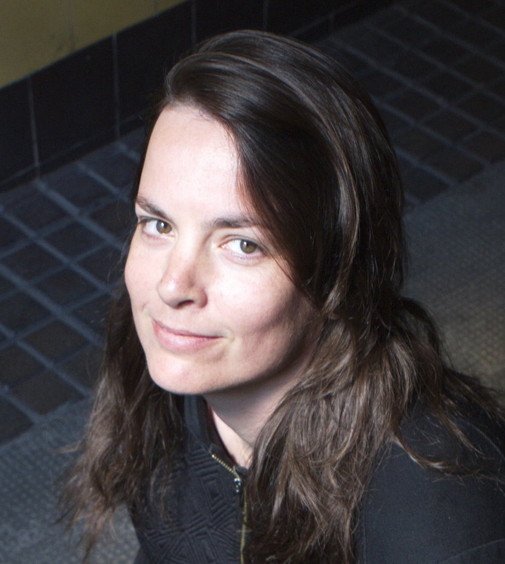

Team¶
 |
Dr. Telmo Menezes (Founder / Maintainer) Researcher at Centre Marc Bloch Berlin / CNRS / Humboldt University and member of its Computational Social Sciences research group http://www.telmomenezes.net |
 |
Prof. Dr. Camille Roth Tenured CNRS Researcher, leader of the Computational Social Sciences research group at Centre March Bloch Berlin http://camille.roth.free.fr |
 |
Dr. Chih-Chun Chen Research Associate at the Engineering Design Centre (EDC), Department of Engineering, University of Cambridge http://abmcet.net |
|  |
Yael Stein Web Developer, former journalist https://www.linkedin.com/in/yael-stein |
|
Kexin Ren Master's student in Cognitive Sciences (Cogmaster) ENS Paris, Intern at Centre Marc Bloch Berlin https://www.linkedin.com/in/kexinren |